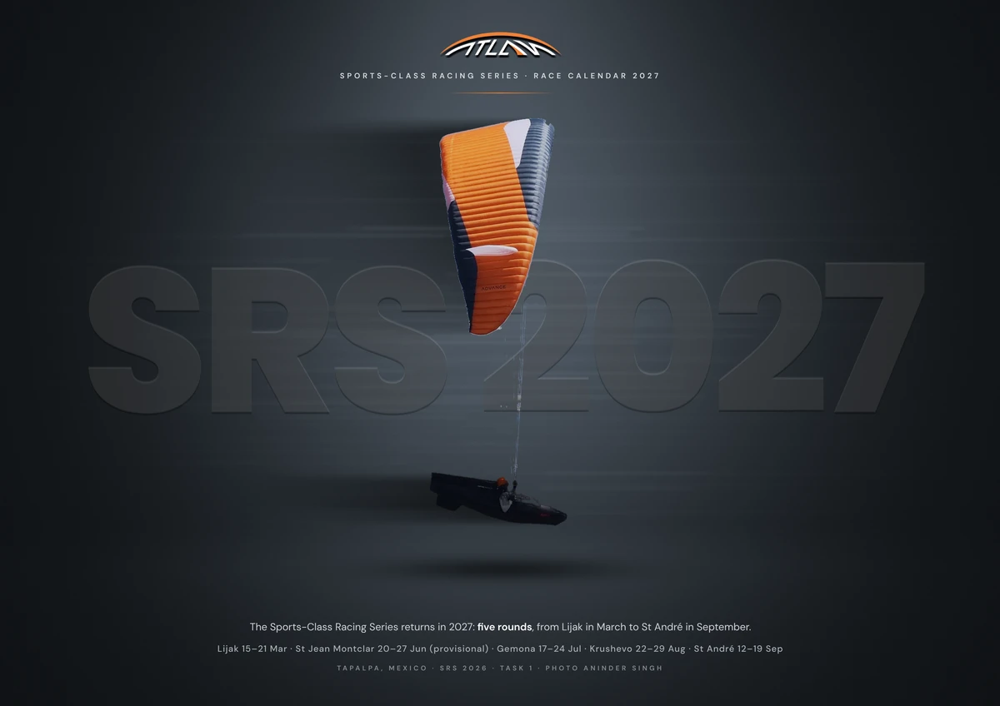
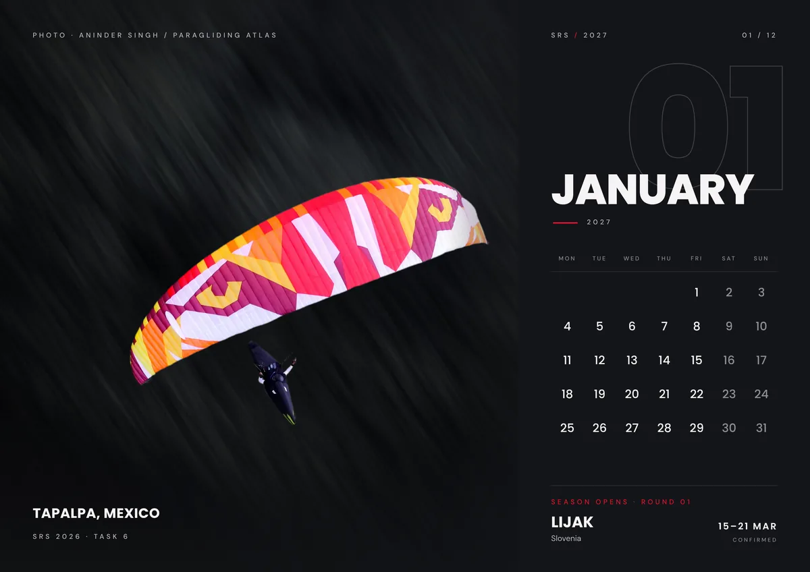
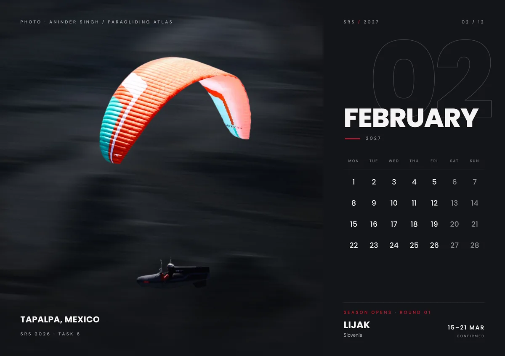
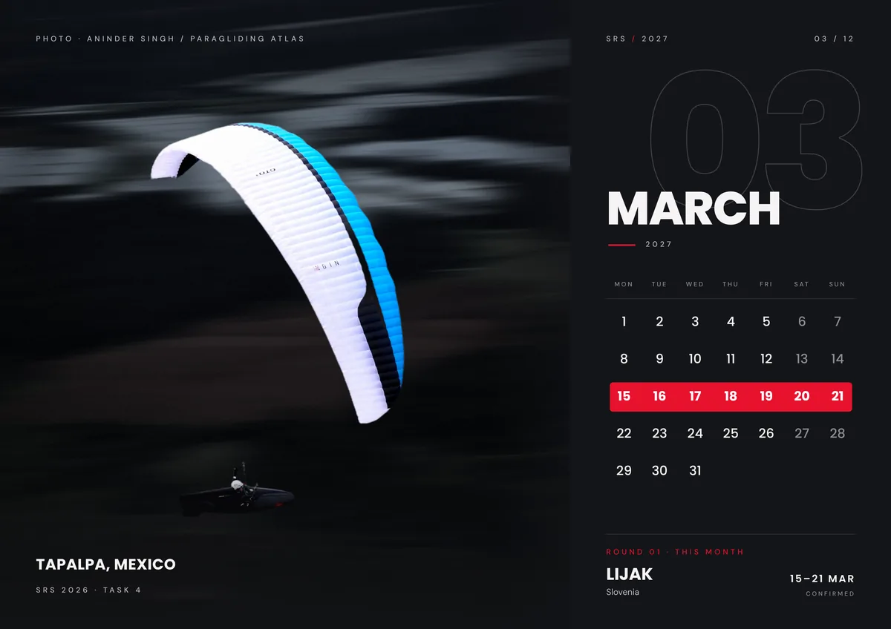
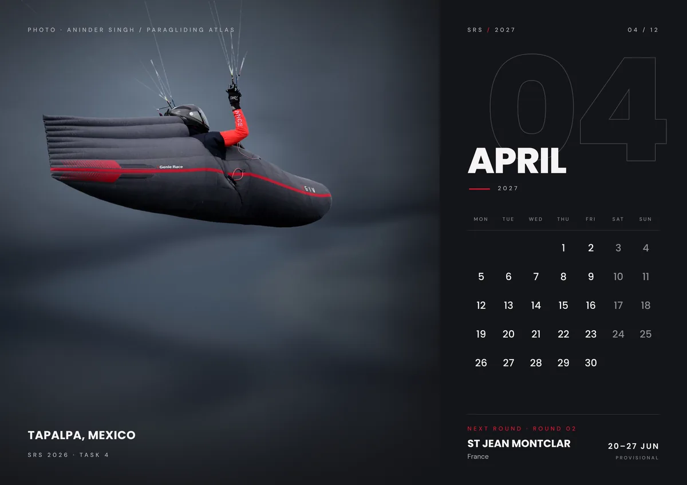
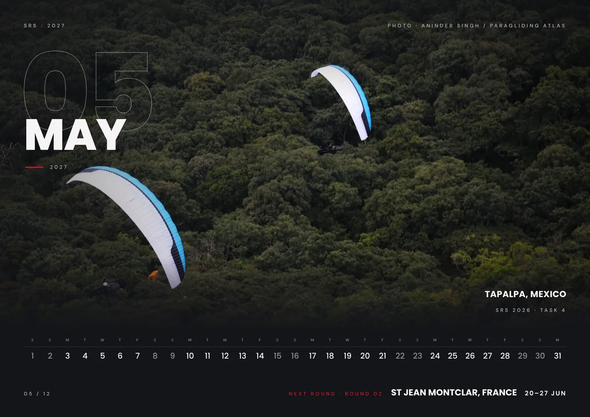
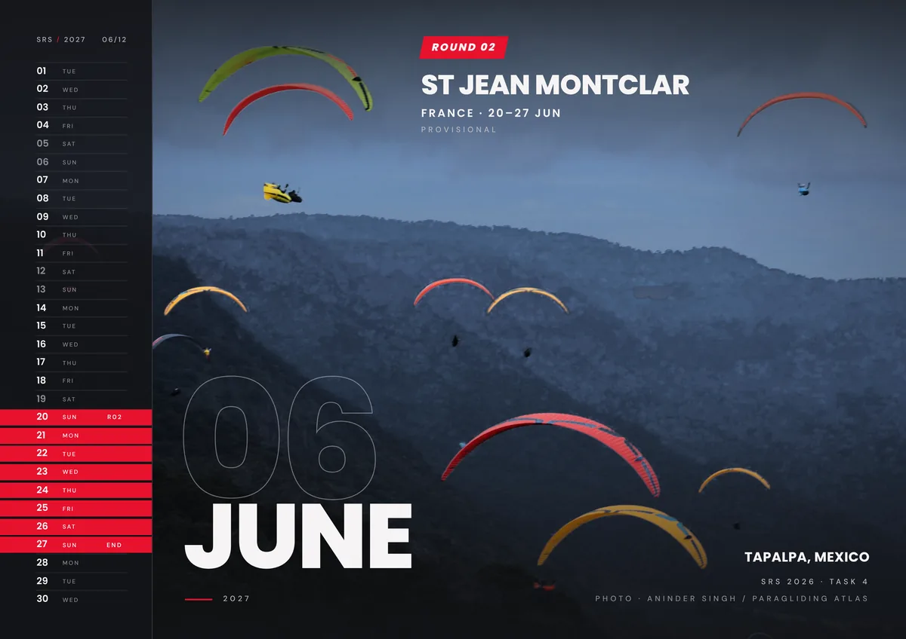
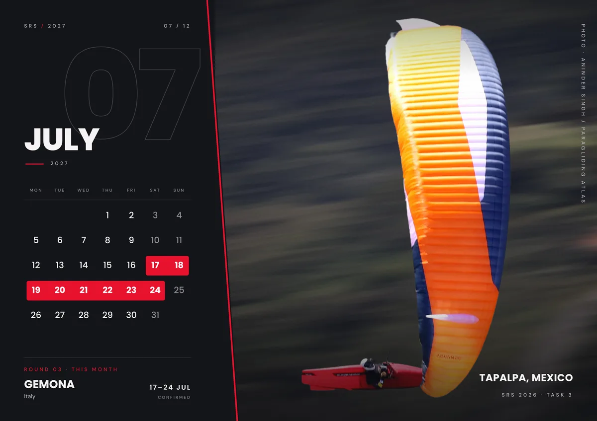
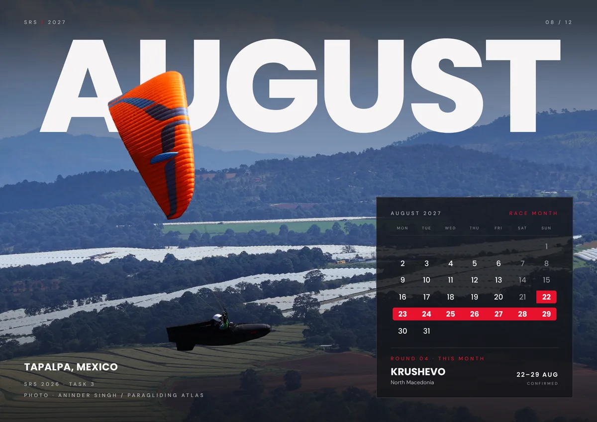

SRS 2027 Race Calendar
The five rounds of the 2027 season, month by month, on photographs from SRS Tapalpa 2026. Download any page, or put the rounds in your own calendar.
The cover and January to August are here. September to December are on their way.
Add to Calendar downloads one small file (.ics) with the five rounds as all-day events. Apple Calendar, Google Calendar and Outlook open it.


Cover
Photo: SRS Tapalpa 2026, Task 6 Download

January
Photo: SRS Tapalpa 2026, Task 6 Download

February
Photo: SRS Tapalpa 2026, Task 6 Download

March
Round 01 Lijak, Slovenia · 15 to 21 Mar Photo: SRS Tapalpa 2026, Task 4 Download

April
Photo: SRS Tapalpa 2026, Task 4 Download

May
Photo: SRS Tapalpa 2026, Task 4 Download

June
Round 02 St Jean Montclar, France · 20 to 27 Jun · provisional Photo: SRS Tapalpa 2026, Task 4 Download

July
Round 03 Gemona, Italy · 17 to 24 Jul Photo: SRS Tapalpa 2026, Task 3 Download

August
Round 04 Krushevo, North Macedonia · 22 to 29 Aug Photo: SRS Tapalpa 2026, Task 3 DownloadOn Their Way
September to December are being made now, one page at a time, and will appear here as each is finished. Wallpapers and the complete calendar as one PDF follow once all twelve months are done.
- 09 / 12SeptemberRound 05 · St André, France · 12 to 19 Sep
- 10 / 12October
- 11 / 12November
- 12 / 12December
The Five Rounds
- Round 01LijakSlovenia15 to 21 Mar 2027Confirmed
- Round 02St Jean MontclarFrance20 to 27 Jun 2027Provisional
- Round 03GemonaItaly17 to 24 Jul 2027Confirmed
- Round 04KrushevoNorth Macedonia22 to 29 Aug 2027Confirmed
- Round 05St AndréFrance12 to 19 Sep 2027Confirmed
Dates as listed on sportsracingseries.org/events on 23 Nov 2026. St Jean Montclar is provisional there; check the SRS page before you book anything.
All From SRS Tapalpa 2026
Every page is a photograph by Aninder Singh / Paragliding Atlas from the Tapalpa round in Mexico. The whole gallery, task by task, is on the event page.